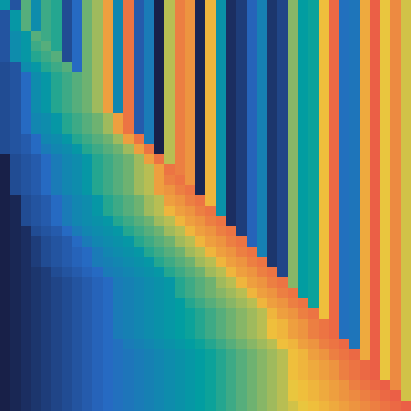

álbum
Ordenação
Quatro jeitos de pôr 40 números em ordem. Cada capa é o vetor passo a passo: uma linha por passo, uma cor por valor.
| # | faixa | tempo | memória | caminhos | duração |
|---|---|---|---|---|---|
| 1 | Bolhabubble sort | O(n²) | O(1) | — | — |
| 2 | Inserçãoinsertion sort | O(n²) | O(1) | — | — |
| ▶ | Intercalaçãomerge sort | O(n log n) | O(n) | — | — |
| 4 | Rápidaquick sort | O(n log n) | O(log n) | — | — |